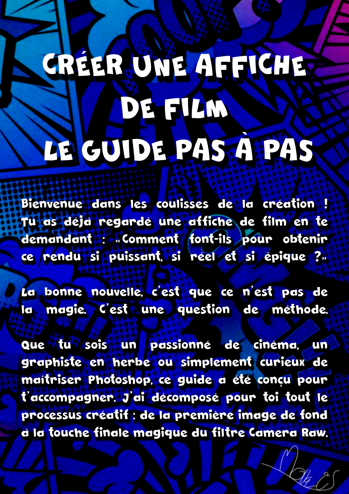
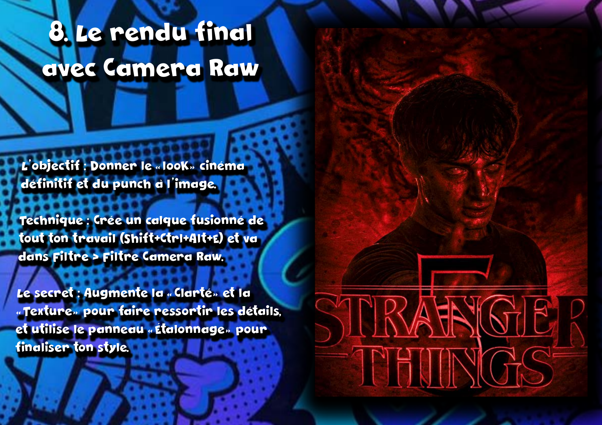

Projet 04 — Personal branding
Lead magnet
l'affiche de film
Dans le cadre du PPP (projet personnel et professionnel), l'objectif était de créer un lead magnet au service de mon personal branding sur LinkedIn. Un lead magnet, c'est un contenu offert : on donne de la valeur gratuitement pour attirer une audience, gagner en visibilité et inciter à s'abonner ou à visiter son portfolio. Le défi n'était donc pas seulement de « faire un beau PDF », mais de penser un outil d'acquisition cohérent avec mon positionnement.
Concevoir un contenu à la fois utile, partageable et fidèle à mon univers (graphisme, key art), qui prouve mon expertise tout en ramenant naturellement vers mon portfolio et mes réseaux.
J'ai d'abord choisi un sujet à forte valeur pour ma cible : « Créer une affiche de film — le guide pas à pas ». C'est exactement ce que les gens veulent savoir faire quand ils découvrent mon travail de key art. J'ai donc transformé mon savoir-faire en méthode transmissible.

Le contenu est structuré en 8 étapes pédagogiques : du choix du fond à la touche finale Camera Raw, en passant par la composition, le détourage, la gestion des calques et l'harmonisation colorimétrique. Chaque étape mêle objectif, technique et conseil pro. J'ai soigné l'écriture (ton direct, tutoiement) et la mise en page dans un univers pop/comics qui me ressemble.

Enfin, le levier « branding » : le guide se termine par un appel à l'action clair — lien vers mon portfolio (colleville-thylan.fr), QR code et liens vers mes réseaux (Instagram, LinkedIn, X). Le contenu travaille ainsi pour ma présence en ligne, pas seulement pour lui-même.
Le résultat est un PDF prêt à diffuser sur LinkedIn, qui combine trois choses que je voulais relier : une vraie valeur pédagogique, une mise en page personnelle, et une logique d'acquisition. Je me sens à l'aise sur l'écriture pour le web, la mise en page et la compréhension de ce qu'est un lead magnet dans une stratégie de personal branding.
Ce qu'il me reste à faire pour passer en pleine maîtrise : le diffuser réellement et mesurer son effet (vues, abonnements, visites du portfolio). Tant que je n'ai pas confronté l'outil à son audience, j'évalue la conception comme acquise mais la partie « acquisition mesurée » comme encore en cours.